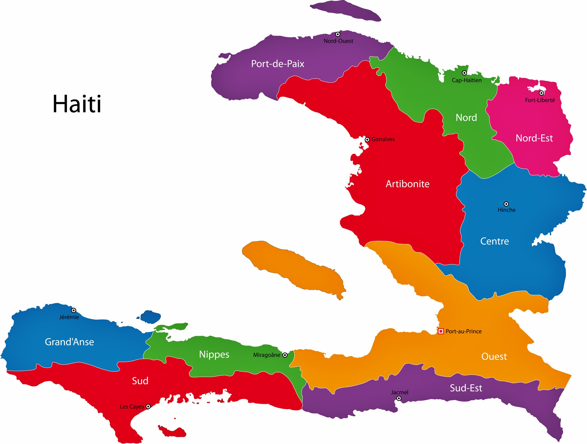
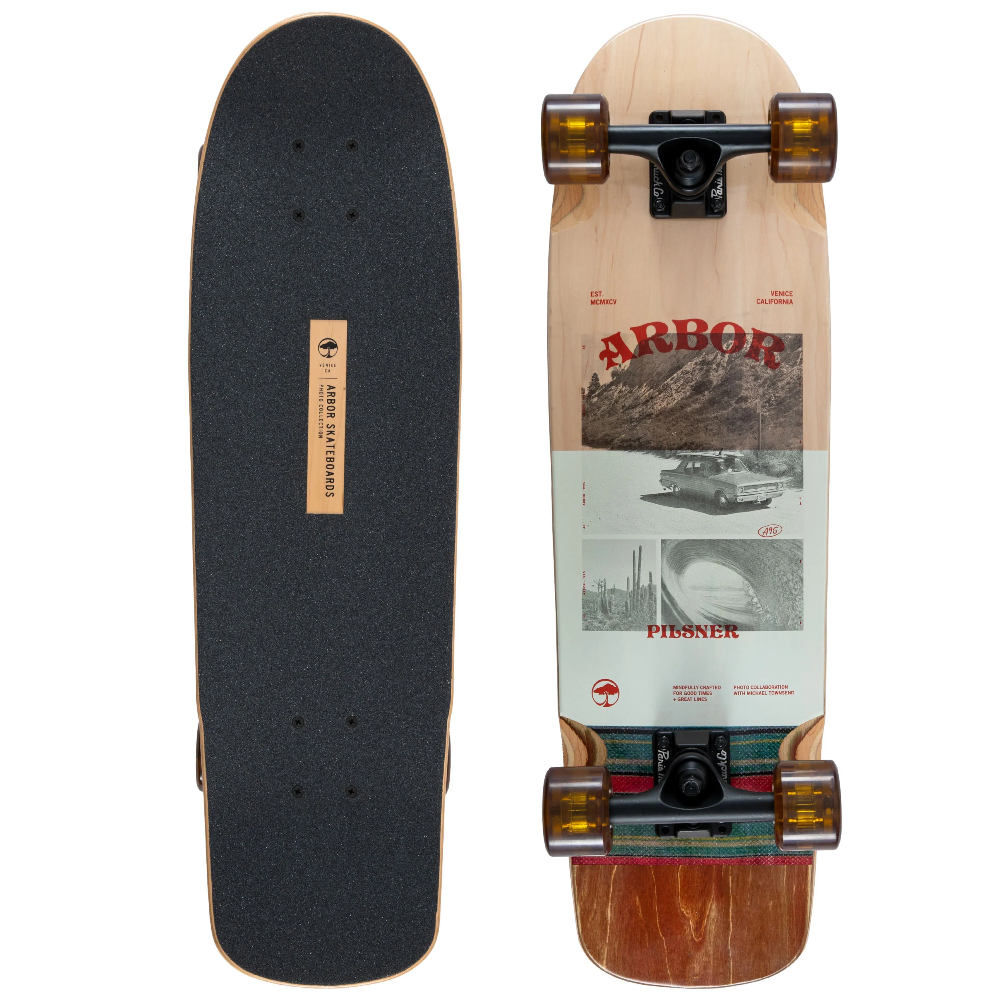
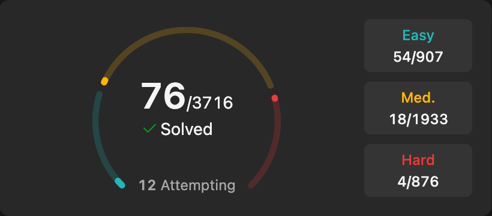
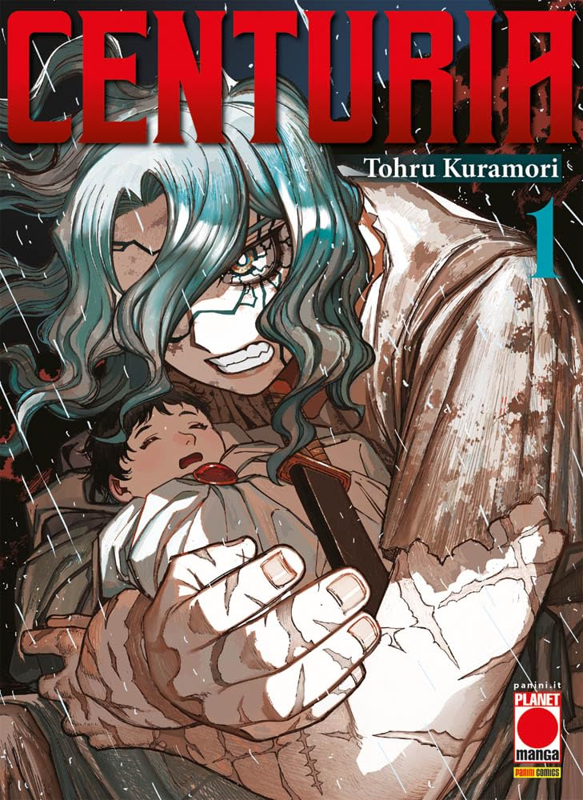

Bio

Hello, whoever is reading this. As you can tell, my name is Jonathan Joseph.
When I was 2 years old, there was an earthquake in Haiti that drastically changed the trajectory of my life,
since my mother planned for me to grow up there. Following the earthquake, my mother sent me to America,
where I have spent most of my life, except for two trips I went to Haiti.
I am currently 17 years old and taking classes at New England Institute of Technology through the ECP.
Visit my school here:
New England Institute of Technology.
Schooling
-
For all of my schooling I have gone to the same K–12 school, Times2 STEM Academy.
-
I have done different summer school programs; the first I ever did, during my rising 6th grade summer,
was Generation STEAM Teach Academy (GTSA). It was a program for K–8 students and I really enjoyed it.
-
I have participated with Brown Pre-College. It was fun, but the coursework was intense.
I chose a class on the rule of law because I thought I wanted to practice law, but that course helped me realize
I don’t want to do that much reading constantly, even though I still enjoy reading.
Hobbies
-
My favorite hobby is skateboarding. I started last year after my sister got me my first board.
It was scary at first since skateboards don’t have brakes, and I fell a few times.

-
I also like to practice coding problems on LeetCode.
I don’t always keep up with my daily goal, but I enjoy thinking through each challenge.

-
I enjoy reading. My favorite book is Forgive Me Leonard Peacock by Matthew Quick.
-
I also read manga, and my current favorite is Centuria.
